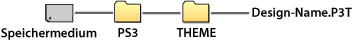

Einstellungen > Design-Einstellungen
Design-Einstellungen
Damit können Sie Einstellungen zum Anpassen der XMB™ vornehmen, z. B. den Hintergrund oder die Schrift für auf dem Bildschirm angezeigten Text.
Design
Sie können das Design von Elementen einstellen, die auf dem XMB™-Bildschirm angezeigt werden, wie z. B. das Design von Icons oder des Hintergrunds. Sie haben folgende Möglichkeiten, das Design einzustellen.
Auswählen eines vorinstallierten Designs
Sie können ein auf dem PS3™-System vorinstalliertes Design auswählen.
Herunterladen eines Designs auf das PS3™-System
Wenn Sie ein Design von  (PlayStation®Store) oder mit dem
(PlayStation®Store) oder mit dem  (Internet-Browser) herunterladen, wird es automatisch auf dem PS3™-System installiert, sobald das Herunterladen abgeschlossen ist.
(Internet-Browser) herunterladen, wird es automatisch auf dem PS3™-System installiert, sobald das Herunterladen abgeschlossen ist.
Installieren eines Designs von einer Spiele-Disc oder aus einer handelsüblichen Blu-ray Disc-Videosoftware (BD-ROM)
Wenn Sie eine Design-Datei von einer Disc installieren und dann verwenden möchten, wählen Sie das Icon  unter
unter  (Spiel) und wählen Sie dann die zu installierende Design-Datei aus. Das Design wird nach Abschluss der Installation automatisch als Systemdesign verwendet.
(Spiel) und wählen Sie dann die zu installierende Design-Datei aus. Das Design wird nach Abschluss der Installation automatisch als Systemdesign verwendet.
Erstellen oder Herunterladen eines Designs mit einem PC
Wenn Sie mit einem PC ein Design von einer Website herunterladen oder ein Design selbst erstellen, legen Sie auf dem Datenträger einen neuen Ordner mit dem Namen [PS3] - [THEME] an und speichern das Design dann in diesem Ordner. Design-Dateien müssen mit der Erweiterung [.P3T] gespeichert werden.

Zur Installation des Designs im Systemspeicher des PS3™-Systems schließen Sie den Datenträger mit der Design-Datei an das System an und wählen dann  (Einstellungen) >
(Einstellungen) >  (Design-Einstellungen) > [Design] > [Installieren].
(Design-Einstellungen) > [Design] > [Installieren].
Anmerkungen
- Ein Icon, das nicht Teil der Design-Datei ist, wird durch ein anderes Icon in der Design-Datei ersetzt oder wird als standardmäßiges XMB™-Bildschirm-Icon verwendet.
- Wenn eine Design-Datei mehrere Hintergründe enthält, wechselt der Design-Hintergrund nach dem Zufallsprinzip.
- Es steht PC-Software zur Verfügung, mit der Sie eigene Design-Dateien für die Verwendung auf dem PS3™-System erstellen können. (Handelsübliche Software zum Erstellen der Grafikelemente ist ebenfalls erforderlich.) Einzelheiten dazu finden Sie auf der SIE-Website für Ihre Region.
- Bei einigen Modellen des PS3™-Systems ist ein USB-Adapter (nicht mitgeliefert) erforderlich, um Datenträger nutzen zu können.
Löschen von Designs
Wählen Sie das zu löschende Design, drücken Sie auf die  -Taste und wählen Sie dann [Löschen].
-Taste und wählen Sie dann [Löschen].
Farbe
Stellen Sie die Hintergrundfarbe des XMB™-Bildschirms ein.
| Original | Einstellen der Originalhintergrundfarbe |
|---|---|
| (Farbe / Farbfeld) | Einstellen der ausgewählten Farbe als Hintergrundfarbe |
Hintergrund
Stellen Sie den Hintergrund im Design oder das unter  (Foto) als Hintergrundbild ausgewählte Bild als Hintergrund des XMB™-Bildschirms ein.
(Foto) als Hintergrundbild ausgewählte Bild als Hintergrund des XMB™-Bildschirms ein.
| Helligkeit | Ändern der Helligkeit des Hintergrundes |
|---|---|
| Original | Einstellen des Original-Designs |
| Klassisch | Einstellen des Designs [Klassisch] |
| (Design-Name) | Verwenden des Hintergrundes für das Design, der unter [Design] eingestellt wurde |
| Hintergrundbild | Einstellen des unter (Foto) als Hintergrundbild ausgewählten Bildes für den Hintergrund |
Schriftart
Einstellen der Schriftart für den XMB™-Bildschirm oder die Nachrichten unter  (Freunde). Wenn die Systemsprache auf Koreanisch, Chinesisch (vereinfacht) oder Chinesisch (traditionell) gesetzt ist, kann diese Einstellung nicht gewählt werden.
(Freunde). Wenn die Systemsprache auf Koreanisch, Chinesisch (vereinfacht) oder Chinesisch (traditionell) gesetzt ist, kann diese Einstellung nicht gewählt werden.
Anmerkung
Welche Schiftarten ausgewählt werden können, hängt von der verwendeten Systemsprache ab.